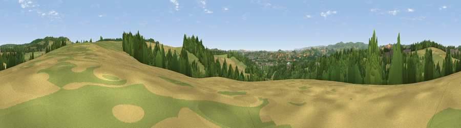

Viewpoint near Ideford Combe
#19358 in England · top 40% of its area beats it · near Ideford CombeThe view, rendered

A 360° render of this exact spot computed from the terrain model, tree cover and land cover — summer colours, afternoon light, calibrated against photographs of famous viewpoints. Real trees, hedges and buildings will differ in detail.
The panorama
Grey silhouette: terrain skyline in each direction (720 bearings, Earth curvature and refraction included). Dashed green: skyline with trees (+15 m) and buildings (+8 m) as obstacles. Blue strip: how far the ground is visible on each bearing.
Where the view opens
Wedge length = distance to the farthest visible ground on that bearing (vegetation-aware). Rings at 10, 25 and 50 km.
What fills the view
45% grassland · 35% woodland · 16% cropland · 3% built-up
Angular shares of the visible panorama (visual magnitude), not map area. Landscape diversity 0.50 (0–1 Shannon).
Key numbers
More beautiful places nearby
The staircase of upgrades: each row has a higher view potential than everything closer. Driving times are estimates from straight-line distance, calibrated against real road routing — check an actual route before setting out.
| Place | Direction | Drive | Score |
|---|---|---|---|
| Viewpoint near Kingsteignton | S · 3 km | ~6 min | 55.1 |
| Viewpoint near Bishopsteignton | SSE · 3 km | ~7 min | 69.5 |
| Viewpoint near Bishopsteignton | ESE · 3 km | ~8 min | 79.9 |
| Viewpoint near Luton | ENE · 5 km | ~12 min | 81.0 |
| Viewpoint near Holcombe | E · 6 km | ~13 min | 83.3 |
| Viewpoint near Shaldon | SE · 7 km | ~15 min | 83.8 |
| Viewpoint near Stokeinteignhead | SE · 8 km | ~16 min | 84.1 |
| High Peak | ENE · 24 km | ~40 min | 85.3 |
50.57496, -3.58555 · source: screening · position refined by local search. Computed location — check access rights before visiting.